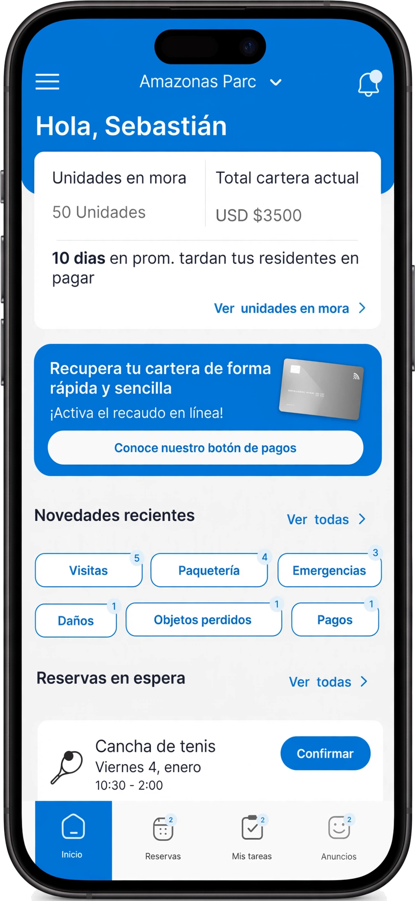
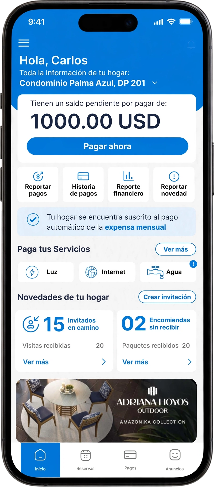

Cindy Lewis · UX/UI
Diseñadora de Producto IA
Creo agentes y productos de IA con Claude Code


De perseguir pagos a un sistema que cobra solo Un checkout propio, pago automático con dos modelos de incentivo y una herramienta de cobranza para administradores. Ver el caso 4 intentos de enseñarle a una IA su propio trabajo La plataforma donde equipos no técnicos crean agentes de IA que llaman por teléfono y escriben por WhatsApp. Ver el casoConóceme
Hacer que lo complicado se sienta obvio.
01
Diseñadora industrial
2006–2011
02
Diseñadora de eventos y estructuras
2014–2015
03
Fundadora, Reserva Nevada
2015–2019
04
Diseñadora web freelance
2023
05
Diseñadora de producto, Habitanto
2024
06
Diseñadora de producto, Tangering AI
2024–2026
07
Diseñadora y constructora de producto, freelance
Ahora
Por qué le importa a tu equipo